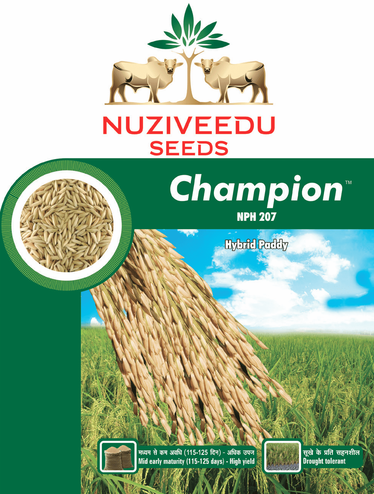

| Morphological Characters | |
|---|---|
| Hybrid Character: | Champion (NPH - 207) |
| Plant Height: | 105 - 110 cm, tall |
| Maturity: | 115 -125 days |
| Grain Type: | Long bold grains |
| Rice: | White colour |
| Disease/Pest Tolerance: | Tolerant to blast, brown spot |
| Suitability: | Suited for irrigated areas during Kharif season |
| Areas of Adaptability: | Irrigated lands of Madhya Pradesh, Uttar Pradesh, Maharashtra, Haryana, Punjab, parts of Andhara Pradesh, Karnataka, Tamil Nadu, Chhattisgarh, Bihar and Jharkhand. |
Special Features/USPs:
|
|